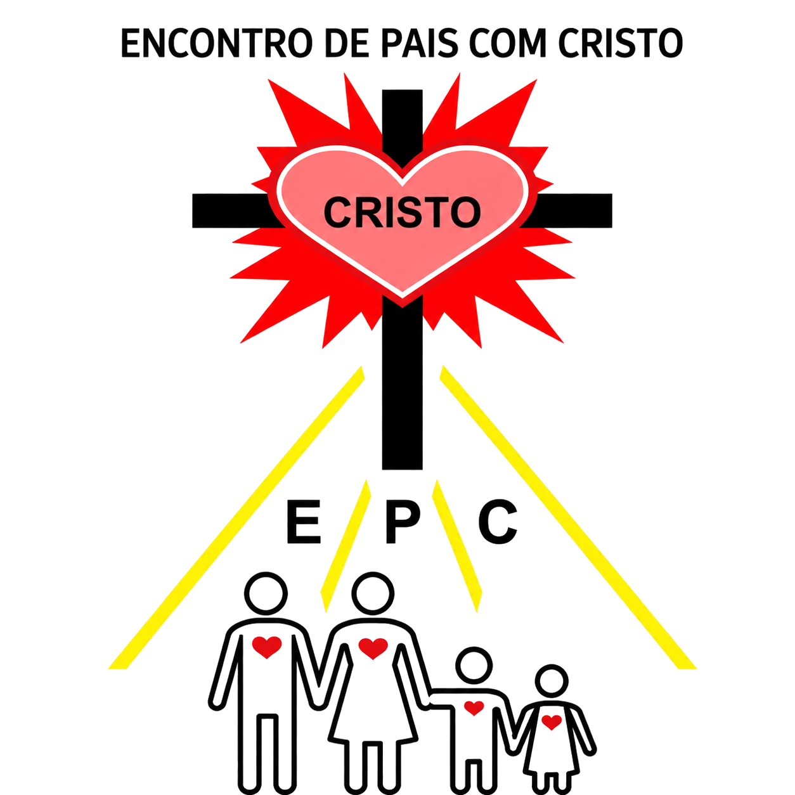
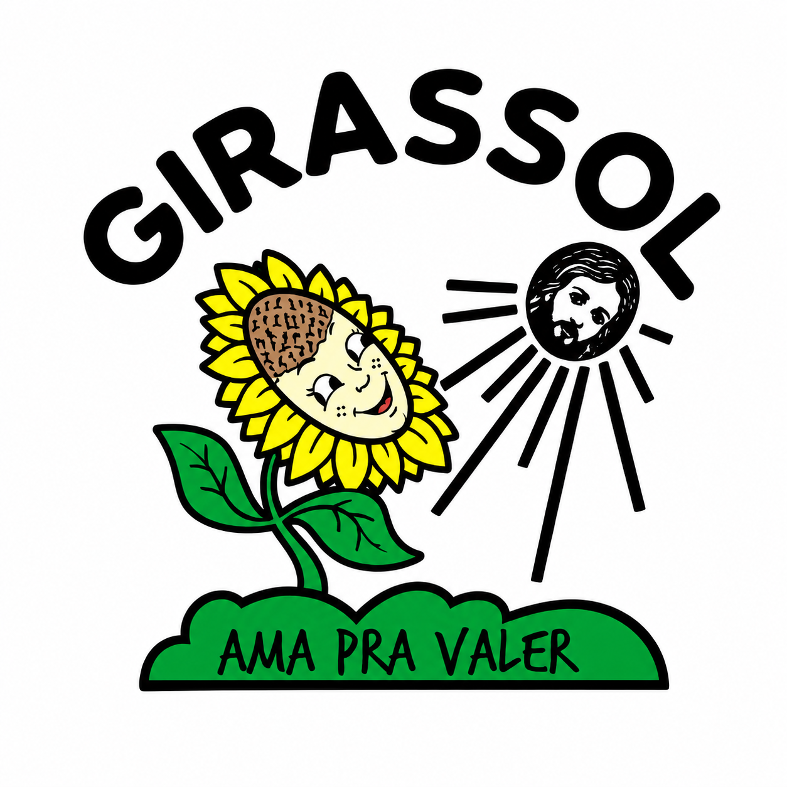
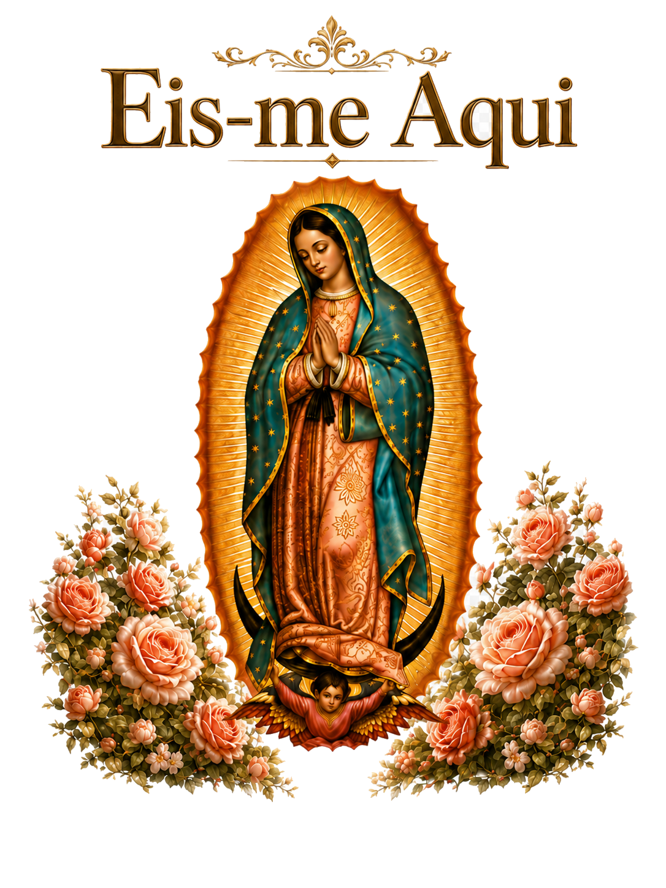

Área Restrita
Encontro de Pais com Cristo
Família unida filhos com vida!
Paróquia Santa Inês - Indaial
eja
Jovens Amigos
ONDA
Objetivos Novos

EPC
Pais com Cristo
eju
Indaial-SC
O Senhor
é meu Pastor

Girassol
Ama pra valer

Eis-me Aqui